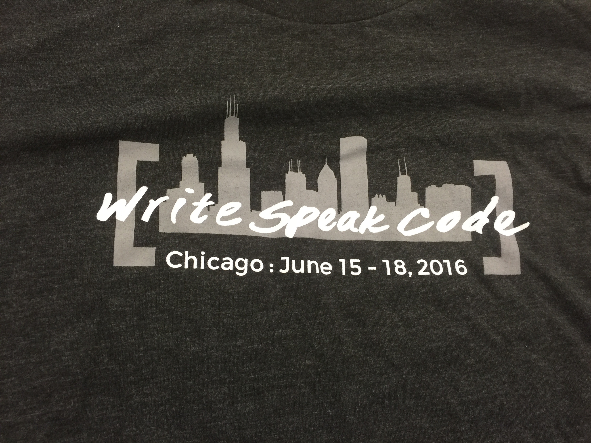
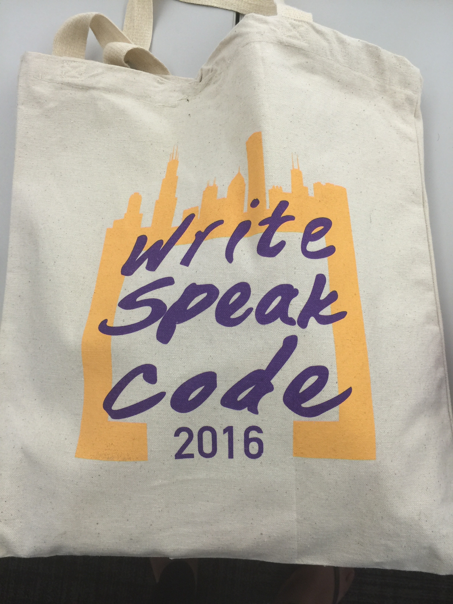
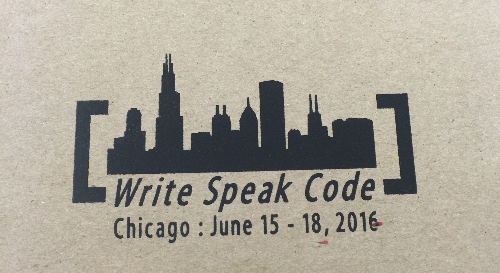
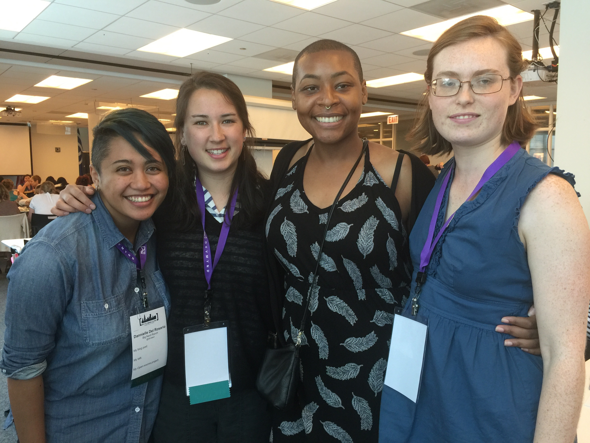

Recap: Write/Speak/Code Conference
6/23/2016
My Cup is Empty
I walked into the Write/Speak/Code conference in a very low emotional and mental space. I was heavily questioning my decision to switch from being a quality assurance analyst to a developer. Every day felt like a struggle as I worked to improve my coding skills. I often felt like an imposter who had somehow managed to sneak in, but had not been caught yet. As soon as Alex Quinn stood up to present her talk Shaving my head made me a better programmer , my mood begin to change. Here was a person who was expressing some of the same feelings I was struggling with. The loneliness, the questioning of worthiness, and the relentless pressure one places on themselves to learn and perform. In that moment I felt like I wasn't the only one. Drip another drop in my cup.

Writing/Speaking/Coding
Every session I went to over the next three days were filled with messages and exercises that let me know that I wasn’t just good enough, but more than enough. I realized that every blog post, every speech, every bit of code that I held inside myself was one less opportunity for someone to not only learn from me, but also see someone who looked like them. Drip another drop in my cup.
Self Care
While I had thought a lot about the importance of emotional and mental wellness while working in tech. I hadn’t given much thought to the importance of the physical and financial components of my life. So hearing Ashley Powell's talk on Salary Negotiations for Women in Tech really shed light on ensuring I'm being paid the money I deserve, not the money I need. Drip another drop in my cup.
The Community
The amount of energy, love, and knowledge sharing that transpired through out the week was amazing. Having the chance to be surrounded by, and engaged with such talented women in tech gave me the renewed energy I needed to refocus and reinvest in myself and the community.
Call to Action
If you weren’t able to make it to this year’s conference, I encourage you to come to next year. You will walk away with your cup overflowing.